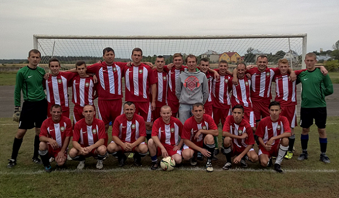

ФК "Качурівка" з 2005 і до сьогодні
ФК "Качурівка" заснована у 2005 році. За роки свого існування гравці клубу грали у вищій та першій лігах футбольної першості Радехівського району. В сезоні 2016 року зайняла 4 місце в Першій лізі (Група А) Радехівського району, що дозволило команді у подальшому боротися за вихід у вищу лігу. Однак за сумою двох зустрічей з переможцем групи Б командою села Сушно, де команда два рази поступилася з загалим рахунком 3-1, не змогла пройти дальше. Вболівальники команди вірять, що у наступному сезоні команда вийде у вищий дивізіон, де буде гідно грати надалі.